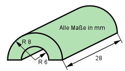

Aufgabe 50 Berechnen Sie das Volumen V und die Oberfläche O des dargestellten Körpers.  V = grüner Halbzylinder (r = 8 mm) - weißer Halbzylinder (r = 6 mm) п * rgrün² * h - п * rweiß² * h V = ----------------------------------- 2 п * 8² mm² * 28 mm - п * 6² mm² * 28 mm V = ------------------------------------------- 2 5 626,9 mm³ - 3 165,1 mm³ V = ----------------------------- = 1 230,9 mm³ 2 O = 2 * (halbe grüne Grundfläche - halbe weiße Grundfläche) + + grüne Mantelfläche + weiße Mantelfläche + 2 * Rechteck 2 mm breit 2 * (п * rgrün² - п * rweiß²) O = ------------------------------- + 2 * п * rgrün * h + 2 * п * rweiß * h + 2 + 2 * 2 mm * 28 mm 2 * (п * 8² mm² - п * 6² mm²) O = --------------------------------- + 2 * п * 8 mm * 28 mm + 2 + 2 * п * 6 mm * 28 mm + 2 * 2 mm * 28 mm O = 87,9 mm² + 703,4 mm² + 527,5 mm² + 112 mm² O = 1 430,8 mm²